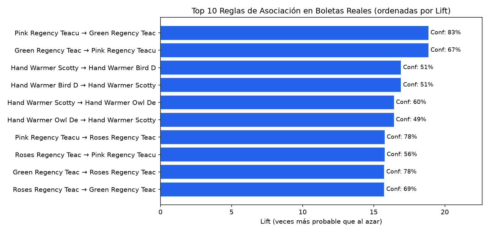
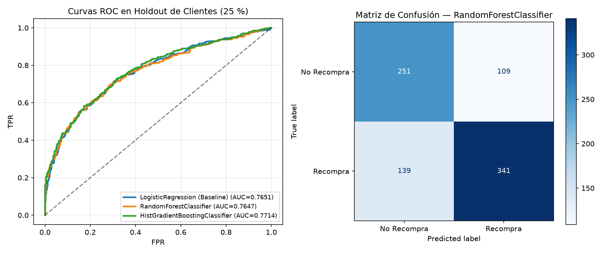

NovaMarket Perú
Tienda online inteligente diseñada para explicar por qué se usa Minería de Datos, cómo se calcula cada recomendación, cuándo actúa cada API y cuánto valor aporta al negocio.
Vista Cliente vs. Vista Interna
Un comprador normal solo ve una tienda limpia estilo marketplace; la gerencia y el expositor ven por dentro las fórmulas, las proyecciones Pasado → Futuro y las APIs en vivo.
011.1 Separación Clara: Afuera (Cliente) vs. Adentro (Empresa)
Resuelve el problema de mostrar métricas internas al comprador, sin ocultar el motor cuando se audita.
1. Tienda Pública (Cliente)
- Catálogo limpio en 4 columnas con precios en Soles (PEN) y carrito lateral.
- Buscador realista: espera Enter, entiende español (
taza → cup) y corrige tipeo (tecup → teacup). - Al entrar al detalle de un producto, muestra 4 complementos debajo; si no hay regla fuerte, promociona la misma categoría para nunca mostrar vacío.
2. Botón "Modo Auditoría IA"
- Interruptor opcional en la cabecera (
OFFpor defecto para el cliente). - Al activarlo en la exposición, revela en el detalle del producto: cuántas boletas lo respaldan, su Confianza %, Lift y cuánto +S/ suma al ticket.
- También permite simular perfiles de comprador detrás de escena.
3. Panel Interno (Gerencia)
- Pasado → Presente → Futuro: curva real mensual + proyección a 3 meses con simulador de ROI.
- Control de catálogo: inventario de los
150SKUs por categoría y estrategia por segmento RFM. - Cero adivinanzas: bitácora viva de APIs y glosario para practicantes nuevos.
1.2 Mapa de APIs: Cuándo Actúan y Qué Beneficio Dan
Cada llamada externa o interna cumple una función comercial concreta (no decorativa).
| API / Endpoint | Cuándo se dispara | Qué hace internamente | Para qué sirve al negocio |
|---|---|---|---|
open.er-api.com (Ext.) |
Al abrir la web y al emitir boleta | Obtiene tasa real USD → PEN (ej. 3.481) |
Evita cobrar con dólar desactualizado y protege el margen en productos importados. |
date.nager.at (Ext.) |
Al cargar contexto gerencial | Lee feriados de Perú (2026-12-08) |
Permite preparar promociones y stock antes de fechas festivas de alta demanda. |
GET /api/products |
Al pulsar Enter en buscador | Sinónimos ES→EN + difflib + popularidad |
No pierde ventas por errores de escritura y prioriza artículos que más rotan. |
POST /api/recommend |
Al abrir un producto o el carrito | Reglas Lift × Conf + respaldo categoría |
Eleva el monto por compra mostrando complementos reales en lugar de dejar espacios vacíos. |
POST /predict |
En Predictor Interno o Auditoría | Corre K-Means + RandomForest |
Identifica quién está por abandonar (En Riesgo) para enviarle cupón antes de perderlo. |
POST /api/checkout |
Al finalizar compra en el carrito | Guarda boleta en SQLite + bandera IA | Audita cuántas boletas reales aceptaron sugerencias del modelo. |
1.3 Así Decide el Modelo en Tiempo Real (POST /predict)
Compara un cliente VIP frente a uno en riesgo para decidir si dar cupón o venta cruzada.
- Compra reciente (12 días desde última visita)
- Alta recurrencia (18 boletas históricas)
- Alto valor acumulado ($6,450 USD)
- Relación madura (240 días de antigüedad)
Cómo se Calcula y Aporte Real
Explicación directa de las fórmulas detrás de las recomendaciones, la predicción futura sin fuga temporal y las 6 fases CRISP-DM.
02Fase 1: Qué Problema Pierde Dinero y Qué Aporta el Proyecto
Pasar de mostrar productos estáticos a tomar decisiones comerciales medibles en caja y gerencia.
Sin Minería de Datos (Antes)
- Carritos pequeños: el cliente compra 1 artículo y se va porque nadie le sugiere el complemento natural que otros ya llevan.
- Fuga silenciosa: los
1,024clientes En Riesgo (gasto medio$1,506) dejan de volver sin recibir ninguna campaña a tiempo. - Gerencia a ciegas: no se mide qué tanto crece el ingreso al combinar venta cruzada + retención.
Con NovaMarket IA (Aporte Proyectado)
- Venta cruzada automática: recomendar complementos reales con
1,560reglas aumenta el valor de boleta sin gastar más en anuncios. - Descuentos solo donde hacen falta: no rebajar margen a los
458 VIP(93.7 %ya recompran), sino enfocar cupones enEn Riesgo. - Proyección Pasado → Futuro: el panel gerencial simula el retorno exacto en Soles por trimestre.
¿Cómo se Calcula Qué Producto Recomendar Debajo de Otro?
No es aleatorio: el algoritmo cuenta co-ocurrencias reales dentro de las 18,532 boletas históricas.
1. Contar Boletas Juntas
Se arma una matriz Boleta × Producto sobre los 150 SKUs principales.
Ejemplo real: La Pink Regency Teacup (22698) y la Green Regency Teacup (22697) aparecieron juntas en 460 boletas.
2. Calcular Confianza (%)
Confianza = Boletas(A y B) / Boletas(A)
Para ese par da 82.73 %: significa que de cada 100 clientes que compraron la taza rosa, ~83 también llevaron la verde en la misma boleta.
3. Medir el Lift y Promocionar
Lift = Confianza / Popularidad(B)
Obtiene 18.85× (19 veces más fuerte que el azar). Si un SKU tiene < 4 reglas, el backend completa con misma categoría y más vendidos para promocionar siempre.
Fase 2: Limpieza de Datos Reales y Serie Mensual
De 541,909 registros crudos a $8,911,407.90 en ventas reales limpias para construir el pasado histórico.

Fig. 1: Por qué se limpia — quitar devoluciones evita recomendar productos devueltos o clientes fantasma.

Fig. 2: Curva real del pasado — pico en noviembre 2011 ($1,161,817 en 2,657 boletas).
Fase 3: Cómo Se Predice el Futuro Sin Hacer Trampa
Se corta la historia el 2011-09-09: solo el pasado entra como variable X; los 90 días posteriores son la respuesta real.
Ventana Pasada (< 2011-09-09)
Para cada uno de los 3,360 clientes se calcula:
- Recency: días desde su última compra.
- Frequency: boletas acumuladas.
- Monetary: gasto total en USD.
Ventana Futura (≥ 2011-09-09)
Se observa en la realidad si el cliente volvió o no en el último trimestre.
Resultado real: 57.11 % sí recompró. Así el modelo aprende hábitos pasados para anticipar el futuro.
Segmentos Reales (K-Means)
- VIP Campeón (458): prom. $6,833 · 93.7 % recompran.
- En Riesgo (1,024): prom. $1,506 · 67.0 % recompran (foco de rescate).
- Cliente Leal (432) y Dormido (1,446).
3,665 productos históricos se extrae el catálogo activo de alta rotación (396,337 filas limpias con SHA-256 verificado en DATA_VERSION.md).
Fases 4–5: Reglas, Clasificadores y Auditoría Transparente
Comparación de 3 algoritmos sobre clientes futuros reales y análisis crítico frente a la meta inicial.


| Modelo | CV AUC | Holdout AUC | PR-AUC | F1 |
|---|---|---|---|---|
| LogisticRegression | 0.7394 | 0.7651 | 0.8241 | 0.7358 |
| RandomForest (Ganador) | 0.7426 | 0.7647 | 0.8295 | 0.7333 |
| HistGradientBoosting | 0.7401 | 0.7714 | 0.8337 | 0.7304 |
0.7647 (RF) y 0.7714 (HGB) con sólido PR-AUC (0.83), suficiente para priorizar cupones en el grupo En Riesgo.
Explicabilidad SHAP: En Qué Se Fija el Modelo Para Predecir
Prueba objetiva de que el modelo sigue la lógica comercial real (antigüedad, gasto y días sin volver).

Fig. 6: Cada fila muestra qué variable pesa más para separar quién vuelve de quién abandona.
Peso Real de Cada Variable (|SHAP|)
Fase 6: Sistema Documentado, Probado y Replicable
Cualquier integrante o practicante nuevo entiende qué mide cada pantalla y puede probar el sistema en 1 clic.
Autosuficiente para el Equipo
- La pestaña Gerencia incluye explicaciones bajo cada KPI, inventario por categoría y glosario operativo.
- La Bitácora de APIs registra en vivo qué endpoint respondió y por qué se llamó.
Verificado con pytest
- Pruebas automatizadas cubren buscador, sinónimos/errores, reglas con respaldo, validación Pydantic (
422) y SQLite. - Linaje SHA-256 guardado en
data/DATA_VERSION.md.
Puerto Libre y Scripts .bat
ABRIR_SISTEMA.batlevanta tienda y API enhttp://127.0.0.1:38420sin chocar con8000.REENTRENAR_MODELO.batreproduce todo el pipeline desde el CSV crudo.
Gracias
Demostración en vivo lista en http://127.0.0.1:38420 (ABRIR_SISTEMA.bat).